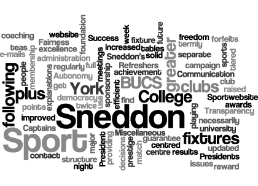
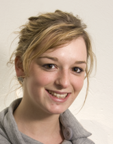
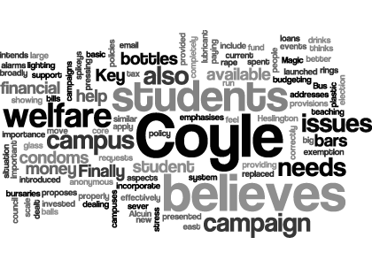
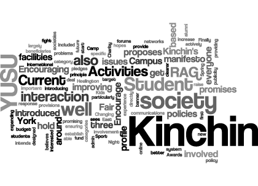
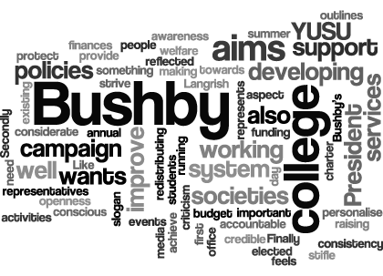

YUSU Elections 2009 » Candidates
David Levene
HUSTINGS:
Produced by York Student Television,
released under a CC BY-NC-ND 2.0 license
David Clarke & Jade Flahive-Gilbert
Produced by York Student Television, released under a CC BY-NC-ND 2.0 license
First year students Clarke and Flahive-Glibert have confessed themselves passionate about ethical and environmental issues, and hope to bring an ethical lifestyle into the reach of students. Despite only being at the university for two terms, the pair have set up Oxfam at York, which Clarke in chair of, and have become heavily involved in the People and Planet society. Their policies include building on the success of recycling on campus, ensuring that the Heslington East campus is build according to ethical and environmental designs and the running of a campaign for students to bank ethically. They also hope to raise the profile of Environments and Ethics at university through a range of socials and events on campus.
HUSTINGS:
Produced by York Student Television,
released under a CC BY-NC-ND 2.0 license
Mandi Madavo & James Ball
Produced by York Student Television, released under a CC BY-NC-ND 2.0 license
Madavo and Ball, current LGBT reps for Derwent, are first years studying History of Art and Music. Within the role of YUSU LGBT Officers they hope to work alongside organisations such as the GSA and ISA to increase membership and participation. They also hope to decentralise the structure of LGBT, claiming that the current set up sees power held too high up in the organisation, and that this often puts off prospective new members. Their policies also include frequent drop-in sessions to raise the profile of LGBT across campus and the running of a sexual health week – STIgma – to promote the importance sexual health for both the LGBT and non-LGBT communities.
HUSTINGS:
Produced by York Student Television,
released under a CC BY-NC-ND 2.0 license
Helen Fry & Zoe Stones
Produced by York Student Television, released under a CC BY-NC-ND 2.0 license
Fry and Stones pledge to bring the fun back to RAG. They want to implement new ideas such as jail breaks, raid tours and breaking world records, starting in Fresher’s week. They also promise to perform on stage at Woodstock if elected.
They pledge to improve communication by producing more editions of the RAG mag, in order to update students with the beneficiaries’ work. They also want to make the RAG web pages more accessible and informative
They want to increase student involvement in RAG and want to create college sub-committees. They want to encourage students to go to the annual RAG conference. They pledge to oversee and contribute to all charitable work within the union. They also want to work with the GSA to ensure a Wentworth RAG Position is filled.
They intend to increase beneficiary awareness by providing each potential beneficiary with a Student Rep who can work with the charity liaison officer. They pledge to hold a RAG Ball in RAG week with the beneficiaries and other charity groups.
HUSTINGS:
Produced by York Student Television,
released under a CC BY-NC-ND 2.0 license
Jamie Tyler
Tyler feels that he can represent students from the university as he feels that he is in touch with their views and the issues which matter.
He is doing more research into Higher Education Funding and the ‘Broke and Broken Report’ as he wants to assess the effects it will have on York students.
He feels that he can select the best people to run the NUS as he has already come across many people who are running.
He feels that at NUS events sometimes the most you get out of them is through the people you meet, sharing experiences, and getting fresh ideas from other Unions. He already has links and would like to create more.
Charlie Leyland
Leyland has been the Academic & Welfare Officer for a year. She believes that she has well represented the views and interests of York students at a national level and would love to do so again at Annual Conference. Examples of her activity include when the HEAR report trial (alternative transcripts to the conventional degree classifications), which is being led by the 94 group, was introduced. It initially wanted to put students’ extra-curricular activity on transcripts. She believed that this would be unhelpful for York students and would simply allow institutions to pile money into a ‘CV writing department’ to improve short term destination data for league tables without any real investment in students’ own skills, quality assurance, recognition of pre-uni activities for mature students, or counteractive statements to those who would be penalised by this who do not have access to extra-curricular activities due to financial, commitment/carer, or other personal reasons. The University already has the York Award which is globally acclaimed and benefits students as well as accrediting them within a flexible framework. By speaking out against this to colleagues in other institutions she believes she influenced the new HEAR report proposal to simply allow an institutions’ own ‘award’.
The priority ballot of Unions has indicated that education, and welfare and student rights are both in the top three areas that the conference will deal with predominantly. She believes she is the most equipped candidate to represent students on both of these issues.
Furthermore she has set up the mechanisms whereby she can consult with students before she votes through the course rep and faculty rep system, and through Equality, Welfare and Diversity meeting.
Daniel Carr
The NUS and National Postgraduate Committee are currently in merger negotiations, essentially meaning the NPC will cease to exist. If these merger negotiations go well, graduates will be represented well by NUS; if they go badly, graduates will get a raw deal.
As GSA President, he feels it is his duty to do everything possible to make sure these negotiations do go well and graduate students are properly represented.
He wants to campaign for a full-time, elected sabbatical postgraduate officer within the NUS, so that when we lose the NPC General Secretary there is still a figurehead for graduate students in the UK.
He wants to lobby for real policy-making powers for the postgraduate bodies within NUS, so that they are capable of more than just paying lip-service to the real issues students face.
And he wants to push for NUS to allow more than one union at any University to affiliate, so that the GSA can get the benefits of NUS membership as well as YUSU, and share the burden of cost accordingly.
He also want to be in a position to report back to the GSA and graduate students on the merger, so that we really know what is going on with our top-level representative body.
Rachel Hesselwood
Produced by York Student Television, released under a CC BY-NC-ND 2.0 license
She pledges to make sure all students know how to get involved with student action, especially postgraduates, by more effective communication and postering.
She wants to help volunteers gain national recognition for the volunteering they do through V-involved.
She will aim to keep students in the loop with what is going on with Student Action through the continuation of the termly newsletter.
She pledges to put an emphasis on training to make sure all volunteers are well trained and comfortable in their roles.
She wants to continue the success of the college cup and to look into ways of developing it, possibly through the development of a “mega college challenge”.
HUSTINGS:
Produced by York Student Television,
released under a CC BY-NC-ND 2.0 license
Iszi Chew
Produced by York Student Television, released under a CC BY-NC-ND 2.0 license
Chew pledges to ensure that Raids and Hitches continue. She will hold information meetings for people to find more about what doing a hitch involves, which she hopes will encourage people to sign up. She has already been in touch with LSE RAG about doing a permit swap and they are interested in doing this. She wants to continue the success of RAG events and to hold events with other campus societies such as York Sport and Fusion. She also pledges to promote non-alcoholic events such as film nights and cake sales. She pledges to increase awareness of new beneficiary voting and then advertise the winning charities, which she hopes will encourage people to get involved. She pledges to increase the scope of voting, hoping that it can be campus wide.
HUSTINGS:
Produced by York Student Television,
released under a CC BY-NC-ND 2.0 license
Sam Daniels & Suzi Ellis
Produced by York Student Television, released under a CC BY-NC-ND 2.0 license
The former Alcuin Ents Reps hope oversee all campus events next year, and see one of their most important jobs as promoting all forms of campus entertainment, whether it be collegiate or Union-based. They plan to ensure that the Courtyard does not impact on college events, but that the two coordinate together to create more successful entertainment opportunities. By being more in contact with college Ents Reps, they intend to provide extra support in order to ensure the popularity and survival and both college bars and their events. They also hope to lobby the university for later licenses and competitive drinks deals on a par with those provided by bars in town, and hope to promote a wider range of alcohol-free events throughout the year.
HUSTINGS:
Produced by York Student Television,
released under a CC BY-NC-ND 2.0 license
Claire Cornock
Produced by York Student Television, released under a CC BY-NC-ND 2.0 license
Cornock became known across campus after her role in coordinating the highly successful York Come Dancing competition last term. In running for the position of Disability Officer, she hopes to be accessible to all students who wish to discuss issues of disability, and in her roles as a seminar leader and mentor for students with dyslexia has worked with a wide range of students across campus. She hopes to establish an online course for staff and students to increase understanding of the problems faced by students with disabilities and create an online forum for sharing support and information.
HUSTINGS:
Produced by York Student Television,
released under a CC BY-NC-ND 2.0 license
Ellie Kuper Thomas & Amal Ali
Produced by York Student Television, released under a CC BY-NC-ND 2.0 license
Fundamentally, they want to provide representational support and services for female students. In order to do this they want to lead several campaigns.
They want to work with the University to ensure that the Heslington East development is a safe environment for women and that they use this opportunity to develop new services for women, such as better nursery provision and a pharmacy.
They pledge to work with welfare to promote a campus safe from harassment or unwanted sexual attention, and to encourage female assertiveness to combat this.
They will aim to work hand-in-hand with other societies to create a united front for an equal and safe campus, as well as running joint debates, lectures and events to promote and discuss the ideas of feminism.
They want to use Women’s Committee as an arena to talk about sensitive issues or subjects often ignored on campus such as sex and sexuality.
They pledge to continue to work with the Health Centre to help gain access to the morning-after-pill on campus.
They pledge to also try to break down the stigma associated with feminism by enlarging the social role of Women’s Committee by encouraging attendance and organising more informal socials
HUSTINGS:
Produced by York Student Television,
released under a CC BY-NC-ND 2.0 license
Chris Etheridge & Jason Rose
Produced by York Student Television, released under a CC BY-NC-ND 2.0 license
Etheridge is current treasurer of York Tories, and Rose the treasurer of URY as well as York Democratic Socialist Forum. Both are current second year students, and are active in university politics, Rose being a well known attendee of YUSU committees, and being responsible for a number of UGMs. They are aiming to use the new position to make the university more effective in campaigning supporting issues such as the NUS ‘Broke and Broken’ campaign as well as moves to raise tuition fees. They intend to lobby for better footpaths and lighting, as well as maintaining support for college bars.
HUSTINGS:
Produced by York Student Television,
released under a CC BY-NC-ND 2.0 license
Elanin Vince & Peter Medley
Produced by York Student Television, released under a CC BY-NC-ND 2.0 license
Vince is secretary of LGBT Social, and Warner-Medley is Co-Chair. In their second years, both have been LGBT reps for Langwith and sat on the YUSU LGBT committee. As LGBT Officers they hope to challenge traditional LGBT definitions and make the organisation appear more accessible. Their policies include the creation of a ‘safe space’ in which meetings can be held and students in need can find refuge. They also hope to work with the ISA and the GSA to increase participation, and with the Healthcare Centre to further understanding of LGBT issues and concerns. Regular debates are also part of their plan, tackling taboo issues such as marriage, blood donation and adoption.
HUSTINGS:
Produced by York Student Television,
released under a CC BY-NC-ND 2.0 license
Charlie Leyland
Current Academic and Welfare officer Charlie Leyland is uncontested in her bid to become Academic Officer this year. As an existing Sabbatical officer, Leyland’s first term saw her pursue popular policies such as rallying the library for 24 hour opening hours. A former Derwent Welfare Rep., Leyland is currently fighting hard for more transparent assessment procedures.
MANIFESTO:
Leyland has based her campaign around six policy areas; representation, assessment, organisation, feedback, employability and ‘extras’.
Believing that working directly with course reps is important, Leyland proposes that YUSU staff help support course reps and that a best practice guide for course reps, which should be endorsed by the University. Leyland also proposes that the current assessment methods used are reviewed, and more relevant innovative and practical methods are introduced.
Under the heading of ‘Organisation’, Leyland intends to continue reviewing the role and remit of academic supervisors and working to synchronise term dates with other Universities. Timetables should also be available to students earlier in the term, and a base level of online material should be implemented across all departments. With regards to feedback, she intends to maintain pressure for more useful and timely feedback, ensure penalties for late submissions across all departments, guarantee feedback within 5 weeks of submission and feedback for final year projects.
Applied material embedded in the curriculum, forging links and relationships within the employment sector, departmental careers fairs and supported vocational opportunities are all policies in the ‘Employability’ categories. Finally in the category of ‘Extras’ Leyland lays put plans to review combine honours studies, continue to work on Student Parent support in the library, work with the GSA to investigate the roll of Graduate Teaching Assistants. Free Dyslexia screening, more central support, better central support for international students are also included in this category.
HUSTINGS:
Produced by York Student Television,
released under a CC BY-NC-ND 2.0 license
{kind=link}
Tom Langrish
Current YUSU Policy and Campaigns Officer Tom Langrish has a wide range of experience within the YUSU system. Langrish also currently holds the position of chair of YUSU Council, and was formerly YUSU Training Officer, Alcuin JCR Vice-Chair, RAG Woodstock Production Manager, RAG Parade Chief Steward and both Summer and Fresher’s Ball Stage Managers. Langrish’s experience also extends to academics, where he has held a position as a History Board of Studies Rep for three consecutive years. Langrish was recently the GSA Returning Officer and is now a member of the GSA Governance Steering Group.
MANIFESTO:
Langrish offers a comprehensive manifesto, which focuses on his ’5 Presidential Promises’. These are to: lobby for JCRC representation on University Council & Student Services Committee; double turnout at UGMs (voting and attendance); broadcast a YUSU podcast twice a term; and overhaul the media charter.
He feels that the interests of colleges do not always match with those of YUSU and says that “college chairs would offer a valuable and differing student perspective to that of YUSU.” Langrish says that a strong advertising policy for UGMs, a re-introducing of money for motion submitters to publicise their proposals, and the introduction of guest speakers and panel debates to the meetings will solve the problem of “appalling” UGM attendance.
Langrish also feels that “YUSU’s current communication methods rely too heavily on posters and emails.” He pledges to “introduce a YUSU podcast twice a term and look at ways of introducing other new and innovative methods of communicating with students.”
Finally, Langrish aims to gather members of the University, YUSU and the media societies to create a new media charter. He plans for select YUSU staff members, who are removed from the so-called “politics” of the Union, to take the decisions involved in censoring editing or pulling an article: “One provision I would propose is that if an article is written about a YUSU officer they, or any other officer, should not be involved in censoring, editing or pulling the article.”
Langrish says that his 5 Presidential Policies represent the themes of his promises: “Representation, Accountability and Participation.” He outlines three main responsibilities of the President –“Representation, Campaigning [and] giving strategic direction to YUSU” – and feels that his experience makes him fit for the role. He adds: “Nothing is achieved without cooperation.”
Produced by York Student Television, released under a CC BY-NC-ND 2.0 license
HUSTINGS:
Produced by York Student Television,
released under a CC BY-NC-ND 2.0 license
{kind=link}
Michael Sneddon
One of the two candidates from outside the existing York Sport universe, Michael Sneddon is a self-confessed sports addict who fuels his passion by reporting on university and college sport for York Vision and the Yorker. A representative for Goodricke in practically every college sport, from cricket to basketball, Sneddon has also participated in university football, darts and pool competitions. Sneddon is also the author of the Yorker’s weekly betting column.
MANIFESTO:
Sneddon’s campaign will be centred on the following points:
BUCS Success: solid foundation for future BUCS achievement through increased coaching and more efficient administration to guarantee no fixture forfeits.
Communication: improved contact between York Sport President and club Presidents and Captains through twice termly meetings.
Autonomy: greater freedom for clubs to find sponsorship.
Transparency: full explanations of major issues and decisions through the York Sport website and e-mails, plus greater democracy.
College Sport: prestige raised through separate awards night, to reward excellence in college sport. Plus, a regularly updated website providing results, fixtures and tables.
Fairness: tiered membership structure for clubs who don’t necessarily use the sports centre.
Miscellaneous: match teas following university fixtures and a Refreshers week to get more people playing sport.
HUSTINGS:
Produced by York Student Television,
released under a CC BY-NC-ND 2.0 license

The candidate’s manifesto in Wordle form
{kind=link}
Gemma Johnson

Gemma Johnson is currently York Sport Tournament Secretary, YUsnow Press and Publicity Officer and Riding Club President. Last year, she was captain of an Equestrian team that won their league, finished sixth at the National finals and comfortably won their Roses contest. Known for her enthusiasm and dedication, she calls the Presidency ‘a massive opportunity to get involved and help my peers’ as well as being something she is ‘genuinely looking forward to’.
MANIFESTO:
Aiming to address why York is trailing competitor institutions in sport, Johnson has pin-pointed three main problems that need improving:
Facilities: enhanced sports centre and external provision, better equipment and improved maintenance
Membership: lower fee for joining York Sport
Support: better backing for elite athletes, clubs and teams through better allocation of funding, facilities and opportunities
Johnson also identified that although media coverage of sport at York had improved, there remains many additional problems that need to be addressed, including transport arrangements and the timetabling of facilities used by clubs
Produced by York Student Television, released under a CC BY-NC-ND 2.0 license
HUSTINGS:
Produced by York Student Television,
released under a CC BY-NC-ND 2.0 license
{kind=link}
Kath Mildon
An integral member of the team that has rejuvenated Wentworth sport this year, Kath Mildon has organised successful tennis and netball tournaments to showcase the best of postgraduate talent, while overseeing the planning of many others. Captain of the ladies’ tennis team during her undergraduate days, she is presently training for a comeback to the side during Roses. A keen advocate of college sport, Mildon intends to increase the numbers of female participants by expanding the range of sports on offer to both sexes. Adopting a Viking alias for the campaign, Mildon aims to convert the momentum from a rapidly improving Wentworth into personal success in the elections.
MANIFESTO:
The principal aim of Mildon’s manifesto is to uphold the integral role of York Sport within YUSU through the implementation of a Sport For All programme, which sub-divides into eight categories:
Health and Fun: including a Park Games initiative where sports equipment can be borrowed free of charge, York Sport Fun sessions aimed at beginner and recreational level students, cycle hire, ride and swim transport provision to local swimming pools and an annual healthy eating week
Reduced Membership Fees: review of the present price structure over the Summer vacation, negotiating discounts through strong relationships with key figures in the university
Communication with students: particularly through the York Sport website
Inclusion: work closely with equality representatives, college sports reps and other associations to ensure sport at York is open to everyone
Wider Community: more opportunities for volunteer coaches, including a lunchtime Playworker scheme in local schools
Research: student liaison to target areas of deficiency
Excellence: newly-appointed Sport Excellence Officer would oversee BUCS, Roses and Varsity
Structural Changes: new non-sabbatical YUSU and York Sport Officer to improve health, inclusion, research, excellence and communication
HUSTINGS:
Produced by York Student Television,
released under a CC BY-NC-ND 2.0 license
{kind=link}
Michael Leahy
Nicknamed ‘Stash’ due to his organisation of the unique Lacrosse merchandise, Michael Leahy is the current York Sport Treasurer and oversaw last year’s away Roses victory as AU Tournament Secretary. A self-proclaimed Lacrosse obsessive, he is the team’s vice-captain and has trialed for the England national team. He claims his experience means he knows ‘York Sport inside-out,’ and therefore understands ‘what needs to be done.’ He describes current incumbent Alex Lacy’s work this year as ‘moving in the right direction’ but says that ‘a lot more work needs to be done’ and highlights term dates and college sport as the two issues he wants to focus on specifically. Known for being a vocal leader on the Lacrosse pitch and his personality off it, Leahy says he has ‘high targets’ for sport at York.
MANIFESTO:
Leahy has set out the following points in his manifesto:
Value for money: the membership fee for York Sport would remain at £40, but would include the hiring of strength and conditioning coaches, plus a physiotherapist, for the free use of members.
College Sport: improvement of both the reputation and standard through the provision of more training time.
Sponsorship: further development of opportunities to generate funds for York Sport projects. With constituent clubs being allowed to maintain financial independence and generate their own sponsorship.
Beginners’ Classes: increased participation in fun activities such as yoga and Pilates, plus the college sports.
Fixtures: address the problems of forfeiting matches.
Development: clubs not using the sports centre to receive a bonus in their grant allocation to spend on club development. Also, more provision for personal development, such as adverts on the York Sport website for coaching/refereeing courses.
Training: continuation of Club President and Treasurer training, supplemented by a handbook guide.
Produced by York Student Television, released under a CC BY-NC-ND 2.0 license
HUSTINGS:
Produced by York Student Television,
released under a CC BY-NC-ND 2.0 license
{kind=link}
Ed Durkin
Ed Durkin is currently YUSU Entertainments Officer. He was involved in coordinating Welcome Week, co-organising Freshers’ Ball and organising and running Big Comedy. He has been instrumental in the planning and organisation of The Courtyard and its events. This has included organising the launch night and consulting with the catering forum on the menu. Durkin also chairs the Ents Committee which allows colleges and YUSU to come together. He has been deeply involved in college events throughout his university career including overseeing over 60 college events, coordinating the B. Henry’s ‘There is a Plan B’ campaign and has been directly involved with over 15 college late licenses. Previously, he held the positions of Alcuin Vice Chair Business and Services as well as being an Alcuin Ents Rep. As a member of Fusion, he raised over £2,000 for the show and held the position of Sponsorship and Advertising Officer, and is currently the Vice Chair of the Platinum Society.
MANIFESTO:
Durkin aims to implement a number of ambitious projects around campus.
A supporter of the plans to bring a Subway to market square, Durkin would aim to start a pizza delivery service in the Courtyard to make use of the kitchens which currently sit unused after 8pm. The union bar would also act as an off-license- a policy Durkin also seeks to extend to the college bars. Your:Shop would see the introduction of a warm food bakery stand to provide hot food on the go.
In addition to his food related policies, Durkin wants to set up several rental services around campus. His bike-rental plans, similar to the existing scheme in Paris, would provide accessible transport around campus if implemented, and he also wants to set up 24 hour DVD rental booths which, presumably, would compete with the library’s existing service.
His entertainment policies are the third main pillar of Durkin’s plans. He will add York to the ‘Ulive’ circuit to attract live acts to perform on campus on a regular basis, and for colleges without bars, Durkin would make the Roger Kirk more accessible for regular events. He would also provide YUSU support for a campus-wide all college evening, with all the profits going back to the colleges themselves.
Conscious of the complications with moving to the Heslington East campus next year, Durkin promises to represent the students’ views during the Goodricke (and ultimately Langwith) move to the new campus. He would also use this move as an opportunity to migrate some YUSU services, such as a welfare drop in clinic, to the new campus, to ensure YUSU’s facilities aren’t diluted. He also wants to make movement between the campuses easier by providing free FTR transport in conjunction with his cycle scheme.
Other policies include moving YUSU banking from RBS to a more ethical provider, making JCRC and society bank balances available online, and making it easier for societies to use the online system for their elections.
Produced by York Student Television, released under a CC BY-NC-ND 2.0 license
HUSTINGS:
Produced by York Student Television,
released under a CC BY-NC-ND 2.0 license
{kind=link}
Emily Scott
Emily Scott has occupied a vast range of sporting positions in her two-and-a-half years at York University. Serving as Halifax’s Sports Rep since her first year, she was the women’s cricket club’s treasurer last year and is currently York Sport Ordinary Member and Media Liaison. In addition, Scott is currently the female hockey President and cricket Captain. She is also a member of the hugely successful York skiing team and will be recognisable to many as the presenter of the weekly YSTV York Sport show. Scott has already stated her opinions on how to improve York Sport publicly: in a recent article for Nouse, she criticised current facilities and argued for an academic Sports Department on the Heslington East campus so that the university could benefit from government HEFCE funding.
MANIFESTO:
Experienced candidate Scott has identified the following points for her campaign:
Transparency: improved communication between the York Sport President and sports clubs, channelled mainly through a monthly meeting where opinions and grievances can be aired.
College Sport: promote the relationship between inter-mural and University sport, with college teams, ‘the best thing about the university,’ acting as a stepping stone to higher levels.
Media: strengthening of links with campus media outlets, for instance the weekly York Sport show, through the Media Sub-Committee.
Membership: encourage inclusion by having a discounted price of £35 for latecomers halfway through the academic year.
Varsity: ensure the annual competition with York St. John will take place in 2010.
Roses: boost York’s chances of winning the annual tussle with Lancaster by providing additional funding to clubs for training and coaching.
Produced by York Student Television, released under a CC BY-NC-ND 2.0 license
HUSTINGS:
Produced by York Student Television,
released under a CC BY-NC-ND 2.0 license
{kind=link}
Ella-Grace Kirton
Ella-Grace Kirton is has been involved with a wide range of societies in her three years at the University. Kirton is an English student who has been involved in three societies over the last year, as well as sitting on the YUSU Environment and Ethics committee. Kirton is currently on the committees for People and Planet, Student Action and Press and Publicity for York University Labour Club. Kirton also writes a blog for The Yorker.
MANIFESTO:
Kirton has also based her campaign around three core policy areas; fairness, contact and inspiration. She is also using the campaign slogan “Less of the same”.
In the category of fairness Kirton has released policies to ensure full transparency in the grant system, specifically ensuring that societies are always “kept in the loop.” Kirton also plans to create a fair and organised system for the allocation of storage and notice boards and to pay fair attention to all societies.
To further contact with societies Kirton plans to attend at least two society meetings a week, ensuring societies know they are heard and supported. She also wants to increase society forums to twice a term. Finally Kirton intends to open a line of communication between newly elected signatories to offer support.
Kirton intends to hold Student Action and RAG workshops, continue holding regular workshops for people wanting to work with children or old people and ensure that Kids Camp continues to run. This falls into her category of Inspiration.
Produced by York Student Television, released under a CC BY-NC-ND 2.0 license
HUSTINGS:
Produced by York Student Television,
released under a CC BY-NC-ND 2.0 license
{kind=link}
Rory Shanks
Current Societies and Communications Officer Rory Shanks has a wide range of YUSU and JCR experience. Shanks was formerly an Ents Assistant, Alcuin JCRC Treasurer and also an Ents Officer for his college. Shanks helped to set up the first Viking Raid, rebranded the Freshers’ Ball and was instrumental in the opening of The Courtyard, for which he created the graphics elements. Outside of YUSU, Shanks is the director of the company that runs the Real Madrid Soccer Language School in the UK and sits on an NUS work group.
MANIFESTO:
Shanks, who ran a very successful election campaign last year, is basing his 2009 manifesto around 8 core principles, which focus strongly on Societies and Fundraising.
A central tenet is the completion of the Student Activities Office – a project that Shanks began during his current term. The Office would provide staff, support and information to ensure the smooth running of societies, charities and volunteer projects and is seen by Shanks as essential to the way campus current operates. As a practical measure, Shanks has also promised to lobby the University to provide more large multi-function spaces for society use, targeting both the Hes East expansion and the current campus.
Shanks has also made it clear that he intends to increase the size of YUSU Fair again this year, to both include more RAG and Student Action projects and alleviate some of the overcrowding that was seen last year. His manifesto also proposes the creation of a YUSU Just Giving that would increase society income by up to 40% using the Gift Aid mechanism, and the utilisation of an online donation system.
Current Societies and Communications Officer, Shanks also hopes to soothe the recent tensions between YUSU and JCRCs with co-ordinated activities between colleges and societies. Shanks proposes refining Student Action challenges, and the creation of competitions and tournaments by societies such as Filmmaking and Frag Soc by YUSU to bring colleges together.
The other half of Shank’s promises centre on RAG, and other charitable ventures. Shanks has promised to encourage individual fundraising events with YUSU support mechanisms, and also push for a large-scale RAG stunt to break a world record to raise both money and publicity.
Shanks has also clearly stated his support for the continuation of Kids’ Camp, and as a former summer school organiser, promises to restructure the Student Action venture along more efficient lines.
Produced by York Student Television, released under a CC BY-NC-ND 2.0 license
HUSTINGS:
Produced by York Student Television,
released under a CC BY-NC-ND 2.0 license
{kind=link}
Jenny Coyle
Tanning Soc President Jenny Coyle has used her position to campaign for safer guidelines and welfare in tanning this year. Coyle also plays darts for the University and was involved with helping out with Woodstock last year. Coyle is active in the Vanbrugh JCR where she tries to get involved with all aspects of the college.
MANIFESTO:
Coyle has introduced sever core policies in her campaign. She believes that election campaigns should be more about students, presented to students and dealing with issues that students understand and feel important.
Coyle intends to run a campaign on student financial welfare. She believes that ,any students are broadly unaware of basic financial issues, and this is a situation which needs to be dealt with. Key aspects of this policy include teaching people to apply for student loans and bursaries correctly, providing help and support on paying bills, budgeting properly and council tax exemption.
Coyle emphasises the importance of effectively lighting walkways between the new campus at Heslington east and the current campus. She also proposes that welfare provisions provided on campus, such as condoms and rape alarms, are available on both campuses. Coyle also believes that a large scale campaign to help fund the Magic Bus needs to be launched. Finally Coyle believes that glass bottles in bars should be replaced with plastic bottles so that students can move out of bars with drinks.
YUSU welfare needs to incorporate a similar system as that used in Alcuin, where welfare requests are completely anonymous without email addresses showing believes Coyle. She also thinks that money spent on key rings and stress balls is a waste of money which could be better invested in more pressing issues. Finally Coyle believes that condoms, lubricant and spikeys should be available at all big events.
HUSTINGS:
Produced by York Student Television,
released under a CC BY-NC-ND 2.0 license

The candidate’s manifesto in Wordle form
{kind=link}
Matthew Pallas
Former LGBT Officer Matt Pallas ran for the position of Academic and Welfare Officer last year. Pallas was Langwith college Welfare Rep in 2007 and was a Langwith STYC before then. Last year Pallas was the head STYC of Langwith E Block in 2008 and was an Ordinary Member of the JCRC in 2006. Pallas also held positions on three NUS conferences last year; annual, extraordinary and LGBT.
MANIFESTO:
Pallas’ welfare policies include changes across four major sectors; housing, employment, health, childcare as well as promise of change to welfare service itself.
With regards to housing Pallas has called for a review of the University’s code of practice in an attempt to establish a clear, accessible complaints procedure. He has promised a tough stance against letting agents that are not signed up to the code of practice and has proposed for a week of housing events and a housing fayre to provide students with advice and to introduce them to reputable landlords.
Pallas’ employment policies include a thorough review of the Careers Service, an attempt to provide students with advice on Rights at Work and surviving unemployment and also a pledge to expand focus beyond accounting, banking and consulting careers. In his health campaign Pallas’ will introduce policies such as a “Best Bar None” scheme to accredit the Courtyard as a responsible alcohol provider, improved non-alcoholic event provision during freshers week, an extension of STI testing on campus and a ‘test your team’ campaign with JCRCs, clubs and societies. Pallas has also promised to follow up existing medical centre reviews in an attempt to ensure that all changes will be implemented.
With reference to childcare, Pallas has guaranteed a campaign for extended childcare provision, a reduction in waiting lists, a review of the allocation policy and extended opening hours to suit students’ academic commitments. He has also planned changes for a the welfare service itself in which there is to be termly welfare training and refresher sessions, a York Award accreditation for welfare training and a thorough review on counselling provision which will pay particular focus on reducing waiting times.
Pallas also intends to bring changes to Welcome Week which will see a collaboration with GSA, 21+ Association, ISA, HYMS and nursing students to provide more students with an appropriate welcome to the university.
Produced by York Student Television, released under a CC BY-NC-ND 2.0 license
HUSTINGS:
Produced by York Student Television,
released under a CC BY-NC-ND 2.0 license
{kind=link}
Ben Humphrys
Current LGBT Officer Ben Humphrys has a wide experience in a number of societies, as well as being Welfare Rep for Halifax College. Humphrys has been Media Representative and Outreach Representative for the New Generation Society, Social Secretary for concert orchestra and treasurer for LGBT. Humphrys’ has recently sat on the YUSU Welfare committee, as well as presenting the URY Welfare show.
MANIFESTO:
Humphrys’ manifesto is based around three key policies; greater union accessibility, holding the university to account and giving a helping hand to students.
Better coordination with students groups and societies and better relationships with stakeholders such as the ISA and GSA are both policies which come under the policy area of “Greater Union Accessibility”. Humphrys’ intends to work closer with the GSA and ISA over budget accommodation, college integration and other key issues. He also proposes that a new student welfare website is built and JCRCs work more closely with YUSU to ensure students know what is available.
Humphrys feels that University accommodation is inadequate for the prices which students pay, and this is something he intends to work on in the next year. He also feels that the Health Centre is an area which needs to be targeted for change next year. Finally Humphrys intends to introduce a GUM clinic and better publicise pharmacy provision on campus.
To “Give a Helping Hand to Students” Humphrys promises to hold landlords to account, to provide a networking account to put students in contact with potential landlords and to better use the Magic Bus and Night Bus. He also intends to campaign for paving and lighting on Halifax’s “Rape Alley” and Walmgate Stray. Finally Humphrys intends to extend portering hours and introduce a Students Mental and Physical health program.
Produced by York Student Television, released under a CC BY-NC-ND 2.0 license
HUSTINGS:
Produced by York Student Television,
released under a CC BY-NC-ND 2.0 license
{kind=link}
George Papadofragakis
George Papadofragakis is currently the Welfare Officer for the International Students’ Association. As a member of the ISA Executive Committee, he assisted in managing the association’s budget – one of the largest within the Union – and he was instrumental in organizing International Week, Fiesta, Buena’s performance, Unwind, Winter Ball, Unreel – YUSU/ISA Freshers event – and many other events. He is a member of the YUSU Welfare Committee and he has taken part in YUSU training.
As an active member of the York Student Peace Movement, he was one of the main organizers of ‘Humanitarian Aid for Gaza’, the protest walk to Selby that raised more than £2,500 for Mercy Corps. He was also involved in organising the ethical investment campaign and the recent DISARM protest.
George has represented York in the Oxford Union debating tournament and, as a committee member of the Debating Society , he has helped organise and adjudicate the first York IV tournament with representatives from 30 universities. Finally, he is Chair of the Democratic Socialists’ Association.
MANIFESTO:
Papadofragakis’ campaign is based around five key principles; promoting direct democracy, opening up YUSU, creating a responsible Union, bringing an international perspective to YUSU and creating a fairer place for student to live and work.
To further promote democracy within YUSU Papadofragakis intends to encourage further participation at UGMs and to make sure students are properly informed about how to put them forward. Increasing turnouts for both meetings and voting, making sure that UGM motions are correctly followed up and reviewing active policy are important aspects of his campaign.
To “open up” YUSU Papadofragakis intends to introduce public debates on major student issues and reform the election process. He also intends to start regular open meetings with students in the Courtyard. Pursuing the ethical investment campaign and ensuring that all Union staff are given appropriate working conditions are policies which he introduces to ensure a responsible Union. He also intends to move York to the forefront of the movement against lifting the tuition fees cap. He wants to use the success of the union bar to motivate managers of the other campus bars to become more competitive. If elected, Papadofragakis promises to focus on ensuring the quality of student support is not adversely affected by the move to the new Heslington East campus. He has promised to utilise the magic bus for transport between Hes-East and Hes-West during day-time.
Papadofragakis believes that bringing an international perspective to YUSU could benefit the union by improving the communication between it and the ISA. He also intends to lobby for an ISA sabbatical position, funded by the ISA, and to extend the Rent Guarantee Scheme on EU students. Finally he wants to create a fairer environment for students by introducing a firmer stance against letting agencies that have not signed the Code of Best Practice and by launching a ‘Student Workers Network’ to provide advice for working students and facilitate trade union representation.
HUSTINGS:
Produced by York Student Television,
released under a CC BY-NC-ND 2.0 license
{kind=link}
Lewis Bretts
Lewis Bretts has an impressive variety of management experience. He has worked in the Backstage and Communications Offices at a number of festivals including the Latitude Festival and the Leeds Festival. He has stage managed a variety of York events including Battle of the Bands, the Summer Ball, and Access All Areas as well as being a Production Manager for Woodstock. He also acted as a Responsible Person for the Summer Ball and Battle of the Bands. As Derwent Ents Rep and a member of YUSU council he has been actively involved in a number of committees. He has also performed for Drama Society and studied abroad at the University of California, San Diego in his second year.
MANIFESTO:
Bretts’ campaign is based around four key principles; “More Service You’ll Use”, “Stronger Colleges”, “A More Accountable YUSU” and “Clearer Financial Management”.
A weekly “fresh food and veg” market stall, temporary ATMs during Freshers’ Week, a weekly minibus service to Morrisons, take away drinks from the Courtyard at the end of the night and the temporary reintroduction of the NUS democracy card are policies which Bretts entitles “Services You’ll Use”.
Bretts also promises to help every college bar compete with the Courtyard, to make B Henrys the home of YUSU Comedy, to ensure JCRCs are trained by YUSU marketing and design staff, to support Goodricke during it’s move and to overhaul Ents Rep. These policies are part of Bretts’ “For Stronger Colleges” pledge.
To ensure a more accountable YUSU Bretts’ promises to make his manifesto visible for the entire year, he intends to start up a “Free Food in the Office Day” where he can talk directly with students, to introduce a weekly video blog and video footage of UGMs and to provide an extra source of funding for JCRCs to increase election participation.
Finally Bretts’ intends to reduce the debit card fee for online purchases to the YUSU website, to make public monthly accounts available to students, to streamline the links between large student organisations, to make society finances manageable online and to make YUSU less reliant on the University for its funding. These policies are in Bretts’ fourth category, “For Clearer Financial Management”.
Produced by York Student Television, released under a CC BY-NC-ND 2.0 license
HUSTINGS:
Produced by York Student Television,
released under a CC BY-NC-ND 2.0 license
{kind=link}
Rhianna Kinchin
Current YUSU Training Officer, Rhianna Kinchin has a lot of YUSU and college experience, having held multiple offices in both areas. In her first year Kinchin was particularly involved in sports, playing for the 2nds Hockey Team as well as being elected as Alcuin Sports Rep. This sporting involvement continued and Kinchin became Social Secretary for the hockey club in her second year, as well YUSnow Deputy Race Captain. Kinchin used to ski internationally.
In 2008 Kinchin was Alcuin RAG Officer, and in the same year took up various publicity posts with The Yorker. Kinchin was also a YUSU Trustee in the summer of 2008. As well as being heavily involved in the development of the Courtyard, Kinchin is currently Treasurer for LawSoc.
MANIFESTO:
Kinchin’s manifesto is based around three policy categories; “Encouraging interaction between Student Activities”, “YUSU is Changing, get involved” and “Current issues and provisions”. Kinchin’s manifesto is based largely around the principle that YUSU is for everyone, and everyone should be able to get involved.
Under the banner of “Encourage interaction” Kinchin promises to hold a Student Activities Awards Night and to hold international society forums. As well as working to raise the profile of the York Campus Kinchin is particularly interested in improving the profile of RAG. She promises to actively encourage interaction between RAG and societies, as well as ensuring that the York Sport Charity is included in the RAG beneficiaries.
Kinchin believes that encouraging student involvement in YUSU is important, and she has introduced three policies to directly target this. As the YUSU Fair is the first experience most students have of the union Kinchin proposes expanding it further, as well as introducing a “YUSU Fair 2″ at the start of the Spring Term. Kinchin also proposes improving society communications and publicity facilities.
In response to what she sees as “current issues” Kinchin has introduced a category of policies designed to deal with current problems. Whilst promising to work to provide a future for Kids Camp, Kinchin also intends to fight for more society facilities on the new Heslington East campus. As well as providing a clearer and more transparent society budget system Kinchin also hopes to increase society admin online. Finally Kinchin pledges to establish better alumni networks to fund specific student activities.
Produced by York Student Television, released under a CC BY-NC-ND 2.0 license
HUSTINGS:
Produced by York Student Television,
released under a CC BY-NC-ND 2.0 license

The candidate’s manifesto in Wordle form
{kind=link}
Tim Ngwena
Third year management student Tim Ngwena is best know as current chair of Fusion and former Graphics Editor of Bad Taste, two of the university’s most visible societies. As the founder and Managing Director of Magic 3 Design Studios, Ngwena has plenty of management experience that could be important for the role of President.
Ngwena’s work as a graphics designer has left him with experience of a large range of societies, working with York Entrepreneurs, LawSoc and the University Rugby Squad. In James College, Ngwena was a Sports Rep in his first year and the College Athletics Captain for two years consecutively. Ngwena was the Real World Entrepreneur of the year runner up in 2008 and has recently completed Enterprise Rent-A-Car management training.
MANIFESTO:
Ngwena knows societies, he knows sports clubs and he knows college spirit. Most importantly, he says, he knows students. Ngwena aims to offer students “something bigger than YUSU”, something “simple” and “transparent” which students can “relate, interact and contribute to.”
He pledges to introduce an informal forum for students to come and talk to him directly on a Friday evening, and that problems shouldn’t be dealt with by “committees and bureaucracy.” He also plans to introduce workshops in association with local services, University departments and Union affiliates. Examples of these workshops would be money management, healthy living, accommodation, self defense and study skills. One policy Ngwena emphasises in his manifesto is the provision of services and welfare for the students on the new Heslington East campus, “as well as their integration with students from main campus on Heslington West.”
He will campaign for a “cost-effective, viable plan for the permanent relocation of the Student Centre to Langwith as well as the consideration of a larger student venue on campus.” He also plans to increase the use of The Courtyard through “better events” such as live music and “society involvement combined with better student offers.” Ngwena plans to push for “more entrepreneurial drive from subsets of YUSU (JCRCs, societies and sports clubs) in order to promote greater financial independence” and encourage greater “academic resource provision in the Library.” He also extends his manifesto towards graduates, arguing that “we need to campaign for more diverse graduate recruiters to reflect the needs of our students, especially in the current economic climate.”
College sport is also on the agenda: Ngwena feels that it needs more funding to promote student engagement and “generate college spirit”, something that will be especially important with the development of Heslington East. Finally, he plans to oversee the restructure of the YUSU website to make “information more accessible and improve communication lines between the Union officers and students.” As President he would strive to deliver: “Efficiency, Diligence, Dynamism, Organisation, Creativity, Inspiration and Dedication.”
Produced by York Student Television, released under a CC BY-NC-ND 2.0 license
HUSTINGS:
Produced by York Student Television,
released under a CC BY-NC-ND 2.0 license

The candidate’s manifesto in Wordle form
Charles Bushby
Having studied Business Administration and International Relations at the University of Southern California and Management at York, Charles Bushby has experience with a wide range of academic arenas. Well known in the sporting community, Bushby is a member of the committee for the rowing team and also for URY. As an active member of Alcuin College he has been a STYC for two years in a row. Particularly interested in the music industry, Bushby has done internships at Sony Music Entertainment and HBO, as well as regularly DJing in the Courtyard.
MANIFESTO:
Bushby is running with the campaign slogan: “conscious, credible and considerate”, something he feels is well reflected in his policies.
Like Langrish, Bushby outlines 5 policies that he would strive to achieve as President.
The first is YUSU openness: he aims to personalise the office of the President and making himself accountable to the people he represents.
Secondly, Bushby wants to improve societies funding by redistributing the finances in the YUSU budget to provide support for the societies and activities that need it most.
Bushby also aims to improve services by raising awareness and developing further existing services.
The college system is also an important aspect of Bushby’s campaign: he aims to support the college system by working towards an annual summer college day, as well as developing other college events.
Finally, Bushby wants more media charter consistency, by working to protect the welfare of students and not stifle criticism of elected representatives.
Produced by York Student Television, released under a CC BY-NC-ND 2.0 license
HUSTINGS:
Produced by York Student Television,
released under a CC BY-NC-ND 2.0 license

The candidate’s manifesto in Wordle form
{kind=link}
Grant Bradley
As a second-year management student, Grant Bradley would have to take a year out of his course to fulfill his duties as President. Perhaps best known as the host of URY show “Bradley and the Bitches”, a topical debate show in which he battles with the “biggest and best bitches on campus”, Bradley has also been involved with The Comedy Society. Although he has no history in campus politics Bradley believes that student politics should be more about representation and less about experience.
MANIFESTO:
Bradley feels that he is currently “rising out of the depths of obscurity” and feels that if the “SU President’s job is to represent the student body, then everyone in the student body should consider running if they feel they can make a valid contribution.”
The emphasis of Bradley’s campaign is to “get as many students interested in Campus Politics and YUSU activity.” Bradley feels that because he has no real history in YUSU either, “it would be a learning experience for everybody involved.”
Bradley says that he is aiming at “giving this election my all”, and that people should “look at what I’m trying to achieve and get behind the idea that the president shouldn’t just be voted in and left to it and that direct access to the student body is paramount to ensuring student needs are heard, and met.”
Produced by York Student Television, released under a CC BY-NC-ND 2.0 license
HUSTINGS:
Produced by York Student Television,
released under a CC BY-NC-ND 2.0 license
{kind=link}
Dave Sharp
Former Halifax College Student Association President David Sharp has a strong bed of support in Halifax, with its 1,000 students. Sharp has been particularly involved in the redesign of JJs, the Halifax JCR. Whilst president of the HCSA, Sharp was particularly involved in events, especially as the college had to deal with losing a bar.
Before becoming president Sharp was the HCSA Bar Rep where he gained more services experience. Sharp has attended a number of Union Council meetings as well as Bar Strategy meetings, particularly at the closing of JJs. Sharp has also served as University Golf President.
MANIFESTO:
Sharp’s campaign is based largely around his principle of “service to the students”. Sharp believes that YUSU is currently run too much like a company and he hopes to bring the focus back to serving the students. Sharp has based his campaign around a number of policies which are directly aimed at students.
Sharp’s experience as President of Halifax has led him to propose a number of policies relating to campus bars. He proposes that colleges without bars such as Halifax and James have access to the Courtyard for events, specifically working with YUSU on currently running events such as CO2. Similarly Sharp also pledges to move the night of Quids Inn so that it is less detrimental to college events. He intends to move it to Sunday night, so that both colleges and YUSU benefit. By improving relationships with Commercial Services Sharp believes that the experience of all student bars could be improved, particularly with increased competition from town. Finally Sharp would like to take the concept of Access All Areas further by introducing a “campus night”, where all bars on campus are open and work together.
Other student services which Sharp hopes to introduce include a new YOUR:SHOP on the Heslington East campus and a Bi-termly book fair to replace the loss of YOUR:BOOKS. With regards to the new Heslington East campus, Sharp introduces a number of policies to deal directly with the transport of candidates. As well as increasing the frequency of the Magic Bus to ferry students between the two campuses, Sharp promises to lobby FTR for a £1 return between them.
Finally Sharp promises to improve the YUSU website to make it easier for students to vote and to increase student participation. He also intends to install satellite navigation in all YUSU vehicles so that societies and sports teams can arrive at destinations quicker and with less trouble. Finally Sharp intends to implement a paper subscription service from YOUR:SHOP, so that students can have papers delivered to their college receptions.
Produced by York Student Television, released under a CC BY-NC-ND 2.0 license
HUSTINGS:
Produced by York Student Television,
released under a CC BY-NC-ND 2.0 license
{kind=link}
President
Facebook Groups
Tim Ngwena – 468
Tom Langrish – 437
Charles Bushby – 241
Grant Bradley – 71
02:18 Monday 9th March
Academic Affairs Officer
York Sport President
-
Disability
-
Racial Equality
- No Candidates
-
Entertainments
-
Chair of Union Council
-
Womens
-
Environment & Ethics
-
Campaigns
-
NUS Delegates
-
Student Action
-
RAG
-
LGBT
*Asterisks indicate winning candidates*
Elections profiles written by Henry James Foy, Sian Turner, Jim Bulley, Laura Connor, Adam Shergold, Leigh Clarke, Holly Hyde, Tom Hobohm, Camilla Jenkins, Adrian Choa, Liv Evans and Ben Gascoyne.
Photo credits: Sam Newsome.
Video credits for YSTV: Matthew Tole, Malcolm Chambers, Simon Harris and Anna Bucks.